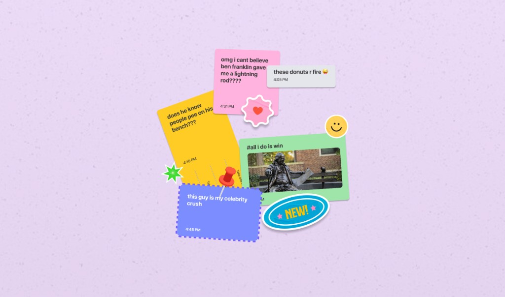
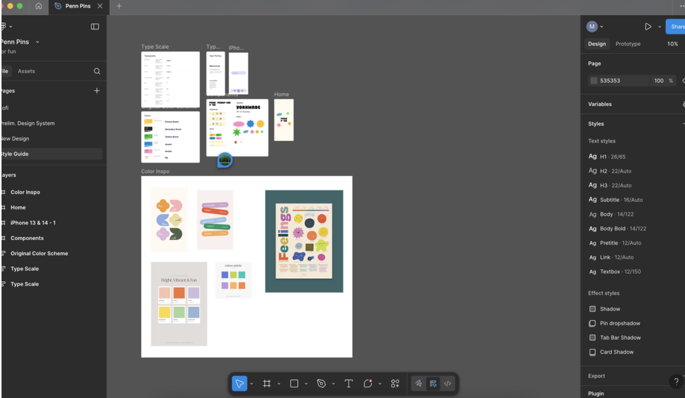
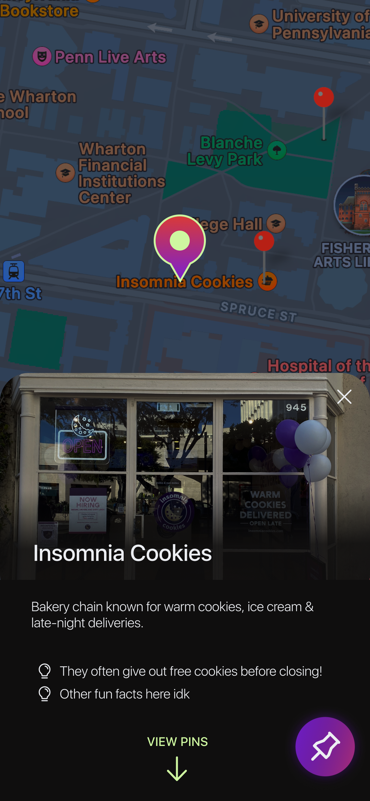
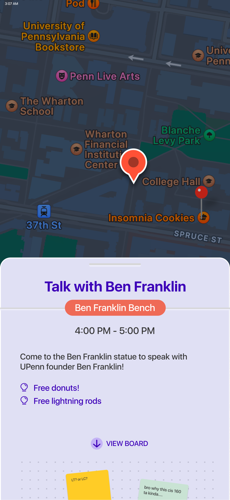

Penn Spark · 2024
Penn Pins
A gamified social layer for discovering what’s happening on campus — pins, bulletin boards, and stickers that make unfamiliar buildings and events easier to find and share.

Context
Penn Pins is a social exploration app: location-aware nudges and area-specific bulletin boards so students bump into what’s going on outside their usual paths.
I worked with a team of developers and designers (me! & a co-designer).
Problem
We defined a problem statement and designed goals centered around our users’ painpoints.
- Personalization Help students notice what matches their interests — not one homogenous feed
- Social proof Encourage people to build connections by showing up in real places
Discovery
We conducted a survey with Penn students. Three numbers framed our design.
- What made Penn students interested enough to come to these events on a busy day
- What’s special about the “Social Ivy” is its social scene — place-based boards that reflect how people actually gather
Solutions
Design system

Features

- Events map Interactive map with pins for what’s on near you
- Event card From a pin to details, including the bulletin board for that place
- Social bulletin board Photos, text, reactions, and shares in real time
- Sticker tray Decorate and react to posts with a shared sticker vocabulary
Pivot
Early explorations skewed dark and corporate; we moved toward a brighter, more colorful, and more social personality.

Before

After
Shipped as MVP with dev collaborators for our annual showcase.
Reflection
Shipping a pilot meant living with rough edges in public. Cutting features mid-quarter taught me to treat the roadmap as a hypothesis, not a promise.
What I learned
- It’s okay to pivot if it aligns with design and business goals
- Failure is another opportunity to learn